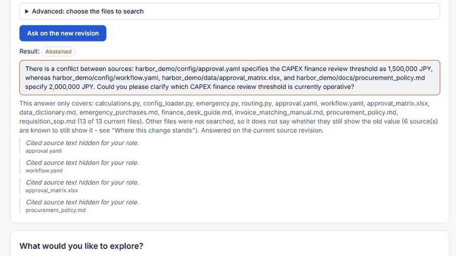

This scenario is B. Recorded four-role case (CAPEX). It is a historical record with its own baseline, input and results; none of its numbers, screenshots or evidence apply to the manager-threshold demo.
Through apply, verification and Q&A; final acceptance pending. A real run on the deployed candidate with a real AI model (no stub), executed by the project owner through the UI with four accounts. The owner stopped at step 13: no result acceptance and no knowledge acceptance was recorded, and none is implied.
Scenario summary
Business objective
Lower the CAPEX finance review threshold in the approval configuration only, keeping the other places visible as unresolved.
Baseline → applied
approval.yamlcapex_finance_threshold_jpy 1,500,000 → 1,000,000 JPY - applied by the requester account and verified (the file was re-read).
Still unresolved
workflow.yaml, approval_matrix.xlsx, procurement_policy.md still state 2,000,000. Loop status PARTIAL.
Measured (simulation, deterministic)
15 of 240 requisitions change, all NEEDS_MANAGER → NEEDS_FINANCE (7 standard + 8 emergency CAPEX). The AI reading was stored separately as interpretation.
Machine verification
PASSED (the changed value read back as 1,000,000).
Human acceptance
PENDING: result decision and knowledge candidate not accepted; "Accept result" is disabled with reasons.
Post-change question
ABSTAINED because the sources still disagree; the system did not pick one value.
Business problem
The sources disagreed about one rule - the CAPEX finance review threshold:
The requester wanted it lowered to 1,000,000 JPY in the approval configuration only, with the other places kept visible as unresolved. Whether Finance's other documents should change too is a business decision that was not made in this run.
Applied change and simulated effect
Applied change Recorded live result
approval.yaml → capex_finance_threshold_jpy
1,500,000 → 1,000,000 JPY
Status: applied by the requester account after approval; machine verification PASSED (the value was read back). Head version 8. Human acceptance of the result: pending.
Simulated effect at the time Recorded live result
Requisitions that changed route (240 samples): 15 move NEEDS_MANAGER to NEEDS_FINANCE. Other routes did not change.
Route
Before
After
NEEDS_MANAGER
124
109
NEEDS_FINANCE
46
61
Stored measurement, simulation ui-simulation-8bede444...: 7 standard + 8 emergency CAPEX requisitions. No requisition list is shown because none was stored for this page.
Still unresolved after the apply
workflow.yaml, approval_matrix.xlsx and procurement_policy.md still say 2,000,000.
ABSTAINED: asked again after the apply, the system did not pick one value because the sources still disagree. That is correct behaviour; it is not an error and it does not mean the knowledge is now right.
Approach
The AI restates the request; the person confirms it. 2. The AI writes a draft with citations; the server checks grounding and generates only the supported edit. 3. Simulation (Harbor's own program, 240 public requisitions, no AI) gives measured numbers; the AI reading is stored separately as interpretation. 4. An independent approver states the check after the change; a reviewer reads the evidence; the approver approves the exact fingerprint; the requester applies; the server re-reads the file and verifies. 5. A question after the change is answered from sources or abstains.
Order of the run (who acted)
Order recorded by the server. Blue = human decision, amber = AI, green = deterministic.
The administrator took part only for one decision on an open point. The order is the order the server recorded, not a tidy four-account sequence. The requester account pressed Apply; the system only processed and verified it.
Steps
Each card shows who acted, what kind of step it was (AI, deterministic or human decision) and the input. Open Result, evidence and caveats for what was recorded. Evidence ids are job or revision ids kept on the server.
Step 1-2 - Request and confirmation
LimitationRecorded live resultAI step - uses quota
CaveatLimitation: for the 8 emergency rows Harbor's emergency.py checks the CAPEX threshold before its hard-coded 1,000,000 manager line, so a CAPEX edit moves them; the page's limit text implied otherwise and was corrected afterwards (the numbers were not).
Step 7 - Proposal
LimitationRecorded live result
Role: requester. Kind: deterministic.
Input: tick the edit and prepare the proposal.
Observed result, evidence and caveats
ResultRecorded live result: "Left for people": workflow.yaml (unresolved), procurement_policy.md. ui-proposal-0701a3f3....
CaveatLimitation: this list omitted approval_matrix.xlsx because of a defect found in this run and fixed afterwards (a model "exclude" closed the item). The old record is kept as it was.
Step 8 - Check after the change
Recorded live result
Role: approver. Kind: human decision.
Input: confirm the suggested check that the server built from the confirmed request.
Observed result, evidence and caveats
ResultRecorded live result: the file must say 1,000,000; contract vc-b5d9801cace7....
Step 9-10 - Review and approval
Recorded live result
Role: reviewer, then approver. Kind: deterministic review + human approval.
Input: read the evidence; approve the exact fingerprint.
Observed result, evidence and caveats
ResultRecorded live result: review READY_FOR_HUMAN_REVIEW; approved. ui-review-5bb3cd11..., ui-approval-185c7ffc....
Step 11 - Apply and verification
Recorded live resultAI step - uses quota
Role: requester pressed Apply; the system then processed and verified. Kind: deterministic + AI re-read of the changed file.
Input: apply the approved change.
Observed result, evidence and caveats
ResultRecorded live result: COMPLETED, verification PASSED; head moved to version 8. ui-apply-dfcd1335....
Step 13 - Ask again
LimitationRecorded live resultAI step - uses quota
Role: requester. Kind: AI.
Input: a question about the CAPEX threshold on the new revision.
Observed result, evidence and caveats
ResultRecorded live result: ABSTAINED: approval.yaml 1,000,000 against workflow.yaml, approval_matrix.xlsx, procurement_policy.md at 2,000,000. The answering model declared that it examined all 13 authorised files; the server accepts a "not found" answer only when that declared scope equals the authorised list, and it checks every citation against the stored text. That is a scope check, not proof that every file was understood. Quotes are hidden for the requester by design.
CaveatLimitation: abstaining is the correct behaviour when sources disagree - the system does not pick one value. It does not mean the knowledge is now correct; it means the disagreement is still open.
Results
Source that changed:approval.yamlcapex_finance_threshold_jpy 1,500,000 → 1,000,000, nothing else; verification PASSED.
Still different:workflow.yaml, approval_matrix.xlsx, procurement_policy.md still say 2,000,000. Loop status PARTIAL.
Knowledge / result: the knowledge candidate is pending a person; "Accept result" is disabled with reasons (knowledge_not_accepted, critical_gap_open). Open, and the project owner's.
CostRecorded live result: 7 AI jobs, 7 calls, 0.1504 USD verified; worker about 55 minutes.
Limits and honesty
Stopped at step 13: no result acceptance, no knowledge acceptance, no Finance-scope decision.
Figures are historical (2026-10-13) and belong to the CAPEX case.
Two defects found in this run were fixed afterwards; the old evidence was not rewritten.
The two screenshots below are illustrations from an earlier run (2026-10-10) of the same screens with a different request; they are not evidence of this run.
Illustration only, not T1 evidence: a "This is what I understood" card from an earlier 2026-10-10 run of the same screens (a different request, 2,000,000 to 1,500,000 JPY).

Illustration only, not T1 evidence: an earlier 2026-10-10 run where the post-change question ABSTAINS and shows the conflicting files, with cited text hidden for this role.